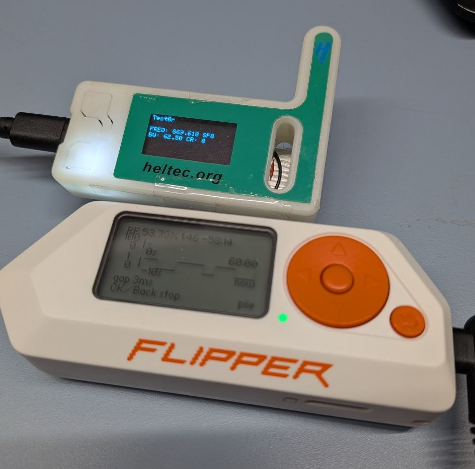

MeshCore · shielded lab · EU/Narrow
Why a 10% setting still sent more
A Flipper Zero running MC-Dutycycle measured two hours of RF activity from a Heltec V3 repeater running the original airtime limiter.
10% Configured duty cycle
21.89% Measured in hour one
12.35% Measured in hour two
Baseline recording · 21 November 2026 · source and calculations in the analysis report
Baseline firmware commit c03a16dc1277954db5098060ba1b93589b3d1486
Bundesnetzagentur · 869.4–869.65 MHz
360 seconds per rolling hour
„Alternativ, Arbeitszyklus: ≤ 10 %“
Observation period „ein fortlaufender Zeitraum von einer Stunde“ .
Under the duty cycle option, exceeding 10% in any rolling 60-minute window is unlawful in Germany. The allocation also permits operation that meets its spectrum access and interference mitigation requirements.
Bundesnetzagentur, Order 91/2025 · Table 2, band 54 (p. 17) · Duty cycle definition (p. 3)
Lab setup · EU/Narrow
One repeater, one RF recorder
Heltec V3 sends the test flood at 869.618 MHz. A USB serial console starts the run.
Flipper Zero shows RF occupancy live and saves timing data to microSD.
The baseline run expected to exceed 10% took place inside an RF-shielded enclosure.

Heltec V3 at the back, Flipper Zero in front. Pictured outside the enclosure.
01 · What the Flipper saw
Throttling began at 14:44
One bar per minute · RF above −60 dBmDashed line · 10% reference
Measured RF activity by minute Occupancy starts near 50 percent. Longer pauses begin about 14 minutes and 44 seconds in. The second hour averages 12.35 percent.
0%
10%
20%
30%
40%
50%
60%
0
15
30
45
60
75
90
105
120
Minute 0–1: 51.15% · 30.688 s RF on Minute 1–2: 49.29% · 29.575 s RF on Minute 2–3: 50.18% · 30.110 s RF on Minute 3–4: 52.80% · 31.682 s RF on Minute 4–5: 50.22% · 30.131 s RF on Minute 5–6: 48.78% · 29.270 s RF on Minute 6–7: 52.27% · 31.363 s RF on Minute 7–8: 50.23% · 30.140 s RF on Minute 8–9: 50.89% · 30.533 s RF on Minute 9–10: 52.36% · 31.418 s RF on Minute 10–11: 49.38% · 29.627 s RF on Minute 11–12: 50.29% · 30.173 s RF on Minute 12–13: 50.94% · 30.563 s RF on Minute 13–14: 48.78% · 29.266 s RF on Minute 14–15: 40.17% · 24.105 s RF on Minute 15–16: 14.34% · 8.606 s RF on Minute 16–17: 11.48% · 6.888 s RF on Minute 17–18: 14.34% · 8.605 s RF on Minute 18–19: 11.48% · 6.888 s RF on Minute 19–20: 14.35% · 8.609 s RF on Minute 20–21: 11.48% · 6.888 s RF on Minute 21–22: 14.35% · 8.607 s RF on Minute 22–23: 11.47% · 6.882 s RF on Minute 23–24: 14.35% · 8.611 s RF on Minute 24–25: 11.47% · 6.884 s RF on Minute 25–26: 14.34% · 8.605 s RF on Minute 26–27: 11.48% · 6.886 s RF on Minute 27–28: 14.35% · 8.608 s RF on Minute 28–29: 11.48% · 6.888 s RF on Minute 29–30: 14.35% · 8.607 s RF on Minute 30–31: 11.48% · 6.887 s RF on Minute 31–32: 14.35% · 8.611 s RF on Minute 32–33: 11.48% · 6.888 s RF on Minute 33–34: 12.71% · 7.626 s RF on Minute 34–35: 12.36% · 7.413 s RF on Minute 35–36: 12.33% · 7.397 s RF on Minute 36–37: 13.10% · 7.857 s RF on Minute 37–38: 10.50% · 6.302 s RF on Minute 38–39: 13.44% · 8.065 s RF on Minute 39–40: 12.77% · 7.659 s RF on Minute 40–41: 12.21% · 7.326 s RF on Minute 41–42: 11.56% · 6.936 s RF on Minute 42–43: 11.94% · 7.165 s RF on Minute 43–44: 12.82% · 7.691 s RF on Minute 44–45: 13.56% · 8.135 s RF on Minute 45–46: 10.03% · 6.019 s RF on Minute 46–47: 14.34% · 8.605 s RF on Minute 47–48: 12.49% · 7.494 s RF on Minute 48–49: 12.33% · 7.398 s RF on Minute 49–50: 11.47% · 6.885 s RF on Minute 50–51: 15.03% · 9.018 s RF on Minute 51–52: 10.21% · 6.127 s RF on Minute 52–53: 11.44% · 6.866 s RF on Minute 53–54: 15.08% · 9.049 s RF on Minute 54–55: 11.59% · 6.953 s RF on Minute 55–56: 11.51% · 6.906 s RF on Minute 56–57: 12.85% · 7.709 s RF on Minute 57–58: 12.32% · 7.395 s RF on Minute 58–59: 12.33% · 7.396 s RF on Minute 59–60: 10.85% · 6.509 s RF on Minute 60–61: 14.35% · 8.610 s RF on Minute 61–62: 11.61% · 6.968 s RF on Minute 62–63: 10.34% · 6.202 s RF on Minute 63–64: 12.59% · 7.556 s RF on Minute 64–65: 13.12% · 7.873 s RF on Minute 65–66: 12.90% · 7.738 s RF on Minute 66–67: 11.40% · 6.839 s RF on Minute 67–68: 13.82% · 8.292 s RF on Minute 68–69: 10.79% · 6.471 s RF on Minute 69–70: 14.24% · 8.543 s RF on Minute 70–71: 12.32% · 7.395 s RF on Minute 71–72: 12.77% · 7.659 s RF on Minute 72–73: 13.28% · 7.969 s RF on Minute 73–74: 11.48% · 6.889 s RF on Minute 74–75: 13.02% · 7.810 s RF on Minute 75–76: 12.23% · 7.339 s RF on Minute 76–77: 12.40% · 7.441 s RF on Minute 77–78: 10.85% · 6.510 s RF on Minute 78–79: 12.77% · 7.661 s RF on Minute 79–80: 11.43% · 6.857 s RF on Minute 80–81: 14.82% · 8.892 s RF on Minute 81–82: 12.48% · 7.487 s RF on Minute 82–83: 10.74% · 6.446 s RF on Minute 83–84: 13.67% · 8.203 s RF on Minute 84–85: 11.65% · 6.988 s RF on Minute 85–86: 11.81% · 7.087 s RF on Minute 86–87: 11.34% · 6.805 s RF on Minute 87–88: 12.22% · 7.330 s RF on Minute 88–89: 14.38% · 8.627 s RF on Minute 89–90: 10.85% · 6.510 s RF on Minute 90–91: 12.90% · 7.741 s RF on Minute 91–92: 11.48% · 6.888 s RF on Minute 92–93: 13.80% · 8.278 s RF on Minute 93–94: 10.99% · 6.593 s RF on Minute 94–95: 13.01% · 7.807 s RF on Minute 95–96: 11.56% · 6.935 s RF on Minute 96–97: 13.64% · 8.184 s RF on Minute 97–98: 11.38% · 6.826 s RF on Minute 98–99: 12.27% · 7.363 s RF on Minute 99–100: 12.27% · 7.362 s RF on Minute 100–101: 13.06% · 7.839 s RF on Minute 101–102: 12.11% · 7.265 s RF on Minute 102–103: 13.23% · 7.938 s RF on Minute 103–104: 11.47% · 6.883 s RF on Minute 104–105: 12.33% · 7.396 s RF on Minute 105–106: 12.09% · 7.252 s RF on Minute 106–107: 14.83% · 8.899 s RF on Minute 107–108: 10.58% · 6.349 s RF on Minute 108–109: 11.20% · 6.720 s RF on Minute 109–110: 12.32% · 7.395 s RF on Minute 110–111: 13.12% · 7.874 s RF on Minute 111–112: 14.35% · 8.608 s RF on Minute 112–113: 9.51% · 5.706 s RF on Minute 113–114: 13.22% · 7.935 s RF on Minute 114–115: 13.50% · 8.099 s RF on Minute 115–116: 12.27% · 7.362 s RF on Minute 116–117: 10.73% · 6.437 s RF on Minute 117–118: 12.32% · 7.395 s RF on Minute 118–119: 12.30% · 7.381 s RF on Minute 119–120: 11.37% · 6.824 s RF on 14:44 · longer pauses begin
Elapsed time (minutes) At startup, the median packet lasted 1.722 s and the median pause lasted 1.724 s. The early trace sits near 50% RF occupancy.
02 · The first-hour overshoot
A full bucket and an ongoing refill
The original limiter refilled even during TX. By the first longer pause, the Flipper had already measured 446.924 s on air , above the entire hour’s allowance.
An hour of silence can refill the bucket from empty, so the burst can recur without a reboot.
03 · The original limiter after silence
The burst can recur without a reboot
Illustrative one-minute bars · post-idle behavior was not measuredDashed line · 10% reference
Theoretical post-idle RF occupancy and bucket credit
One-minute RF occupancy bars show an earlier burst, 90 minutes without transmissions, and another burst followed by pacing. The lower chart shows the old airtime bucket falling, refilling in 60 minutes, and falling again when traffic returns. The first hour after traffic returns can exceed 10 percent. These traces are illustrative and were not measured.
RF occupancy by minute
Available TX credit
0%
10%
20%
30%
40%
50%
60%
−105
−90
−60
−30
0
15
30
60
Earlier burst
Quiet period · no TX
Traffic resumes
Throttling resumes
360 s
0 s
Refills in 60 min
First rolling hour after traffic resumes
Minutes relative to traffic resuming
An hour without TX can refill an empty bucket. When traffic resumes, the next rolling hour can exceed 360 s on air again.
04 · The second-hour overshoot
Each long packet could leave an unpaid balance
The old check let TX start at about 1.155 s of credit. During TX the budget gained another 0.172 s . After charging the packet, the dispatcher reset the negative balance to zero.
Median silence in hour two was 11.562 s. A 1.721 s packet at a steady 10% needs 15.489 s of silence.
05 · The rolling-hour result
The rolling average never reached 10%
Each point · airtime in the preceding complete hourDashed line · 10% reference
Rolling 60-minute duty cycle The first full hour measures 21.89 percent. The rolling measure declines to 12.35 percent at two hours.
0%
5%
10%
15%
20%
25%
0
15
30
45
60
75
90
105
120
Waiting for the first complete hour
0–60 min: 21.89% 1–61 min: 21.28% 2–62 min: 20.65% 3–63 min: 19.98% 4–64 min: 19.31% 5–65 min: 18.69% 6–66 min: 18.10% 7–67 min: 17.42% 8–68 min: 16.81% 9–69 min: 16.14% 10–70 min: 15.50% 11–71 min: 14.89% 12–72 min: 14.26% 13–73 min: 13.63% 14–74 min: 13.01% 15–75 min: 12.56% 16–76 min: 12.52% 17–77 min: 12.54% 18–78 min: 12.48% 19–79 min: 12.50% 20–80 min: 12.45% 21–81 min: 12.51% 22–82 min: 12.48% 23–83 min: 12.47% 24–84 min: 12.46% 25–85 min: 12.46% 26–86 min: 12.42% 27–87 min: 12.41% 28–88 min: 12.38% 29–89 min: 12.43% 30–90 min: 12.37% 31–91 min: 12.39% 32–92 min: 12.34% 33–93 min: 12.38% 34–94 min: 12.35% 35–95 min: 12.37% 36–96 min: 12.35% 37–97 min: 12.36% 38–98 min: 12.38% 39–99 min: 12.36% 40–100 min: 12.35% 41–101 min: 12.36% 42–102 min: 12.37% 43–103 min: 12.39% 44–104 min: 12.37% 45–105 min: 12.35% 46–106 min: 12.38% 47–107 min: 12.39% 48–108 min: 12.36% 49–109 min: 12.34% 50–110 min: 12.36% 51–111 min: 12.32% 52–112 min: 12.39% 53–113 min: 12.36% 54–114 min: 12.33% 55–115 min: 12.36% 56–116 min: 12.38% 57–117 min: 12.34% 58–118 min: 12.34% 59–119 min: 12.34% 60–120 min: 12.35% 21.89%
12.35%
Elapsed time (minutes) The last complete window contained 444.531 s of RF activity, 84.531 s above the 360 s allowance.
06 · What the changes address
Full packet credit and a rolling limit
Charge the full packet Wait until the estimated airtime of the selected frame fits the available allowance. This closes the gap that kept hour two above 10%.
Look back 60 minutes Track recent TX airtime. At 10%, cap the rolling total at 360 seconds and return capacity as earlier transmissions age out.
The follow-up capture tests whether bursts still fit within the rolling limit.
Read the full baseline analysis and view the source recording
The new dutycycle.burst setting
Choose how much airtime can burst
A 10% limit gives the repeater 360 seconds per rolling hour. The burst setting decides how much can be used back-to-back.
0% 360 s paced over 60 min
50% 180 s burst and 180 s paced over 57 min
100% All 360 s available for bursts
With the default 50% split, one-second packets in the paced quota start at least 19 s apart. The same rolling limit applies at every setting.
07 · Follow-up capture · 22 November 2026
The rolling limiter stayed below 10%
The highest complete 60-minute window held 353.276 s on air . That’s 6.724 s below the configured allowance.
9.72% First hour
9.77% Second hour
9.81% Peak rolling hour
Firmware commit b258e94b280f5b0911812c721ab9e6ce41e24e99 · Follow-up analysis and source recording
08 · Burst and paced airtime
The burst returns after an hour
One bar per minute · RF above −60 dBmDashed line · 10% reference
Rolling limiter RF occupancy by minute An initial burst ends at about 5 minutes 46 seconds. A second burst appears around minute 60 as earlier airtime ages out.
0%
10%
20%
30%
40%
50%
60%
0
15
30
45
60
75
90
105
120
Minute 0–1: 53.11% · 31.865 s RF on Minute 1–2: 49.16% · 29.493 s RF on Minute 2–3: 52.64% · 31.583 s RF on Minute 3–4: 51.28% · 30.769 s RF on Minute 4–5: 49.69% · 29.816 s RF on Minute 5–6: 40.85% · 24.512 s RF on Minute 6–7: 7.90% · 4.740 s RF on Minute 7–8: 5.74% · 3.444 s RF on Minute 8–9: 5.74% · 3.444 s RF on Minute 9–10: 2.87% · 1.722 s RF on Minute 10–11: 5.74% · 3.442 s RF on Minute 11–12: 5.74% · 3.444 s RF on Minute 12–13: 5.74% · 3.444 s RF on Minute 13–14: 5.74% · 3.442 s RF on Minute 14–15: 5.74% · 3.445 s RF on Minute 15–16: 2.88% · 1.726 s RF on Minute 16–17: 5.73% · 3.440 s RF on Minute 17–18: 5.74% · 3.444 s RF on Minute 18–19: 5.74% · 3.444 s RF on Minute 19–20: 5.74% · 3.444 s RF on Minute 20–21: 5.74% · 3.443 s RF on Minute 21–22: 3.04% · 1.822 s RF on Minute 22–23: 5.57% · 3.344 s RF on Minute 23–24: 7.49% · 4.493 s RF on Minute 24–25: 3.55% · 2.132 s RF on Minute 25–26: 6.43% · 3.856 s RF on Minute 26–27: 5.58% · 3.345 s RF on Minute 27–28: 4.35% · 2.610 s RF on Minute 28–29: 4.45% · 2.672 s RF on Minute 29–30: 4.84% · 2.904 s RF on Minute 30–31: 4.98% · 2.986 s RF on Minute 31–32: 5.25% · 3.152 s RF on Minute 32–33: 5.63% · 3.381 s RF on Minute 33–34: 5.44% · 3.264 s RF on Minute 34–35: 4.65% · 2.788 s RF on Minute 35–36: 6.01% · 3.609 s RF on Minute 36–37: 5.93% · 3.559 s RF on Minute 37–38: 5.03% · 3.018 s RF on Minute 38–39: 4.87% · 2.919 s RF on Minute 39–40: 4.68% · 2.807 s RF on Minute 40–41: 5.74% · 3.445 s RF on Minute 41–42: 6.72% · 4.035 s RF on Minute 42–43: 4.35% · 2.608 s RF on Minute 43–44: 4.51% · 2.708 s RF on Minute 44–45: 6.48% · 3.887 s RF on Minute 45–46: 3.72% · 2.230 s RF on Minute 46–47: 5.25% · 3.151 s RF on Minute 47–48: 7.02% · 4.214 s RF on Minute 48–49: 3.72% · 2.233 s RF on Minute 49–50: 4.84% · 2.904 s RF on Minute 50–51: 5.09% · 3.053 s RF on Minute 51–52: 5.74% · 3.443 s RF on Minute 52–53: 7.33% · 4.396 s RF on Minute 53–54: 2.87% · 1.721 s RF on Minute 54–55: 5.74% · 3.444 s RF on Minute 55–56: 7.10% · 4.262 s RF on Minute 56–57: 3.94% · 2.366 s RF on Minute 57–58: 4.62% · 2.774 s RF on Minute 58–59: 4.79% · 2.872 s RF on Minute 59–60: 6.59% · 3.954 s RF on Minute 60–61: 30.03% · 18.016 s RF on Minute 61–62: 40.94% · 24.564 s RF on Minute 62–63: 38.03% · 22.818 s RF on Minute 63–64: 49.52% · 29.714 s RF on Minute 64–65: 50.41% · 30.246 s RF on Minute 65–66: 50.12% · 30.072 s RF on Minute 66–67: 46.72% · 28.031 s RF on Minute 67–68: 3.94% · 2.366 s RF on Minute 68–69: 8.45% · 5.071 s RF on Minute 69–70: 4.16% · 2.498 s RF on Minute 70–71: 5.74% · 3.442 s RF on Minute 71–72: 5.74% · 3.443 s RF on Minute 72–73: 5.74% · 3.445 s RF on Minute 73–74: 5.74% · 3.444 s RF on Minute 74–75: 4.61% · 2.763 s RF on Minute 75–76: 4.00% · 2.403 s RF on Minute 76–77: 5.74% · 3.442 s RF on Minute 77–78: 5.74% · 3.445 s RF on Minute 78–79: 5.74% · 3.444 s RF on Minute 79–80: 5.36% · 3.213 s RF on Minute 80–81: 3.85% · 2.312 s RF on Minute 81–82: 5.47% · 3.284 s RF on Minute 82–83: 4.97% · 2.983 s RF on Minute 83–84: 5.74% · 3.441 s RF on Minute 84–85: 4.46% · 2.674 s RF on Minute 85–86: 5.74% · 3.444 s RF on Minute 86–87: 6.18% · 3.710 s RF on Minute 87–88: 5.03% · 3.017 s RF on Minute 88–89: 4.97% · 2.984 s RF on Minute 89–90: 6.37% · 3.820 s RF on Minute 90–91: 3.72% · 2.233 s RF on Minute 91–92: 4.57% · 2.742 s RF on Minute 92–93: 5.93% · 3.558 s RF on Minute 93–94: 4.90% · 2.939 s RF on Minute 94–95: 6.59% · 3.953 s RF on Minute 95–96: 3.69% · 2.217 s RF on Minute 96–97: 7.02% · 4.213 s RF on Minute 97–98: 3.67% · 2.199 s RF on Minute 98–99: 7.33% · 4.396 s RF on Minute 99–100: 2.87% · 1.722 s RF on Minute 100–101: 5.14% · 3.083 s RF on Minute 101–102: 6.46% · 3.873 s RF on Minute 102–103: 6.43% · 3.856 s RF on Minute 103–104: 5.06% · 3.035 s RF on Minute 104–105: 4.46% · 2.674 s RF on Minute 105–106: 6.21% · 3.724 s RF on Minute 106–107: 4.41% · 2.644 s RF on Minute 107–108: 3.94% · 2.363 s RF on Minute 108–109: 5.14% · 3.084 s RF on Minute 109–110: 6.05% · 3.630 s RF on Minute 110–111: 4.46% · 2.675 s RF on Minute 111–112: 5.88% · 3.526 s RF on Minute 112–113: 6.20% · 3.722 s RF on Minute 113–114: 5.13% · 3.081 s RF on Minute 114–115: 4.15% · 2.492 s RF on Minute 115–116: 5.05% · 3.033 s RF on Minute 116–117: 5.03% · 3.018 s RF on Minute 117–118: 5.93% · 3.557 s RF on Minute 118–119: 5.27% · 3.164 s RF on Minute 119–120: 6.50% · 3.903 s RF on 5:46 · pacing begins
Hour one ends · burst capacity returns
Elapsed time (minutes) Pacing began at 5:46 after 178.038 s on air. The typical paced pause was about 31 s. Burst airtime became available again as the first hour’s buckets expired.
09 · Before and after
A burst can fit inside the rolling limit
Green · rolling limiter Grey · baselineDashed line · 10% reference
Rolling 60-minute duty cycle compared with baseline The rolling-limiter trace stays below 10 percent. The baseline stays above it. The exact rolling-limiter peak is 9.81 percent.
0%
5%
10%
15%
20%
25%
0
15
30
45
60
75
90
105
120
0–60 min: 9.72% 1–61 min: 9.33% 2–62 min: 9.20% 3–63 min: 8.95% 4–64 min: 8.93% 5–65 min: 8.94% 6–66 min: 9.09% 7–67 min: 9.74% 8–68 min: 9.71% 9–69 min: 9.75% 10–70 min: 9.78% 11–71 min: 9.78% 12–72 min: 9.78% 13–73 min: 9.78% 14–74 min: 9.78% 15–75 min: 9.76% 16–76 min: 9.78% 17–77 min: 9.78% 18–78 min: 9.78% 19–79 min: 9.78% 20–80 min: 9.77% 21–81 min: 9.74% 22–82 min: 9.78% 23–83 min: 9.77% 24–84 min: 9.74% 25–85 min: 9.75% 26–86 min: 9.74% 27–87 min: 9.75% 28–88 min: 9.76% 29–89 min: 9.77% 30–90 min: 9.80% 31–91 min: 9.78% 32–92 min: 9.77% 33–93 min: 9.77% 34–94 min: 9.76% 35–95 min: 9.79% 36–96 min: 9.76% 37–97 min: 9.77% 38–98 min: 9.75% 39–99 min: 9.79% 40–100 min: 9.76% 41–101 min: 9.75% 42–102 min: 9.75% 43–103 min: 9.78% 44–104 min: 9.79% 45–105 min: 9.76% 46–106 min: 9.80% 47–107 min: 9.78% 48–108 min: 9.73% 49–109 min: 9.76% 50–110 min: 9.78% 51–111 min: 9.77% 52–112 min: 9.77% 53–113 min: 9.75% 54–114 min: 9.79% 55–115 min: 9.76% 56–116 min: 9.73% 57–117 min: 9.75% 58–118 min: 9.77% 59–119 min: 9.78% 60–120 min: 9.77% 9.81% exact peak
Waiting for the first complete hour
Elapsed time (minutes) The baseline peaked at 21.89%. The rolling limiter peaked at 9.81%, even with a second burst in the capture.
USB serial console
Airtime test command reference
Check and configure ver
get radio
get tx
set dutycycle 10
set dutycycle.burst 50
get dutycycle
get dutycycle.burstRun the lab flood flood 7200
flood status
flood stop
dutycycle.burst sets the share of the rolling-hour allowance that can be used back-to-back. At 50%, half is available for bursts and half is paced.
flood [--continuous] <seconds> [region] · Run for 1–7,200 seconds. --continuous skips the test packet pause. The airtime limiter still applies.
Next · Region priority
How can an operator keep airtime available?
The next deck shows how a preferred scope can reserve part of the burst and paced quotas for maintenance or emergency coordination.
Queue priority Host tests show what happens when preferred and ordinary packets compete.
Measured airtime Two one-hour captures compare what unscoped and preferred traffic can send.
Open the region priority presentation →
← / → Slides · F Fullscreen
←
1 / 15
→
Fullscreen